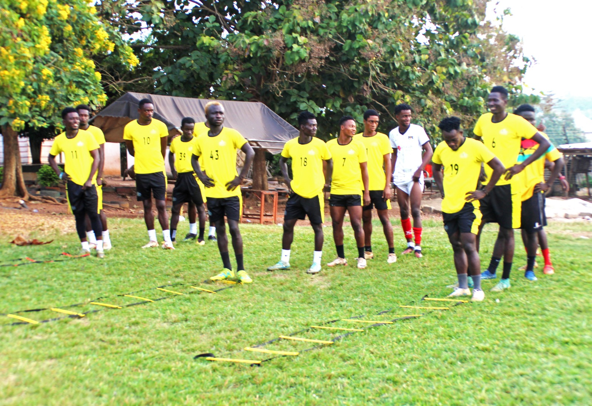
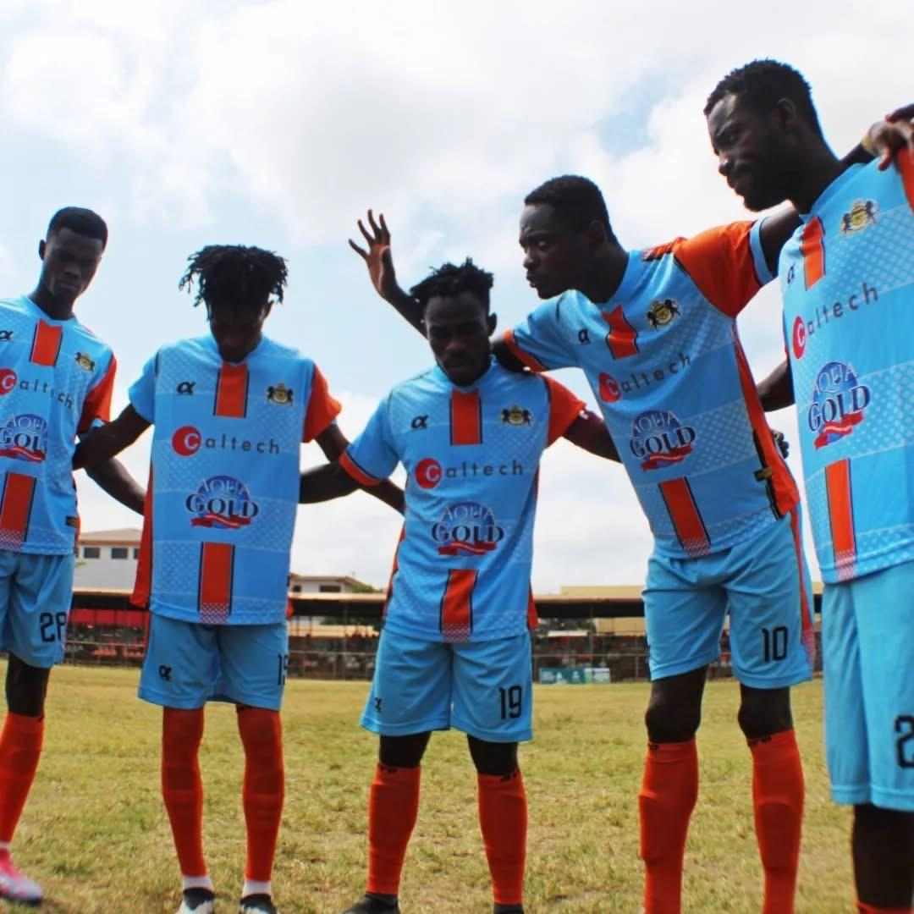

Adade, a former Ghana youth striker in 2023 formed the outfit named ADADE FOOTBALL CLUB, located in Sunyani. It's a registered football club under the umbrella of the Ghana Football Association(GFA). Adade Football Club is a third-tier club in Ghana, currently, a member of the Brong Ahafo Regional Football Association and participating in the ongong 2023-24 Division Two League. They sit 5th on the log with 29 points having played 18 league matches with five games to end season. The club operates a first team, popularly called Stage 1 and a youth team called Stage 2. Players of Stage 1 are considered first team members and compete in the third-tier whiles Stage 2 players are considered juvenile who will get promotion to first team based on performance. The ex-Dreams FC star has hired the services of elite football coaches and mentors for the fast growth of the club. Adade Football Club focus is to unearth and nurture players for the European market as well as local market with no line of barrier. Nonetheless, has target set for promotion to second-tier football within two seasons. "We know Sunyani is a bussiness center with quiet a number of good talents and would be prudent to work very well with kids, with high-level professionals," Club President Daniel Adade said. "I believe in a short time, everyone would see Adade Football Club breeding big names in football then also turn to help a lot and Ghana football would be up there"Our focus, is mainly on producing talents to the wider market but then again secure promotion to Division One League few years times. The club has already established contacts in Portugal and Spain with top-flight teams for players to exhibit their talents by way of trials and professional deals.
|  |  |